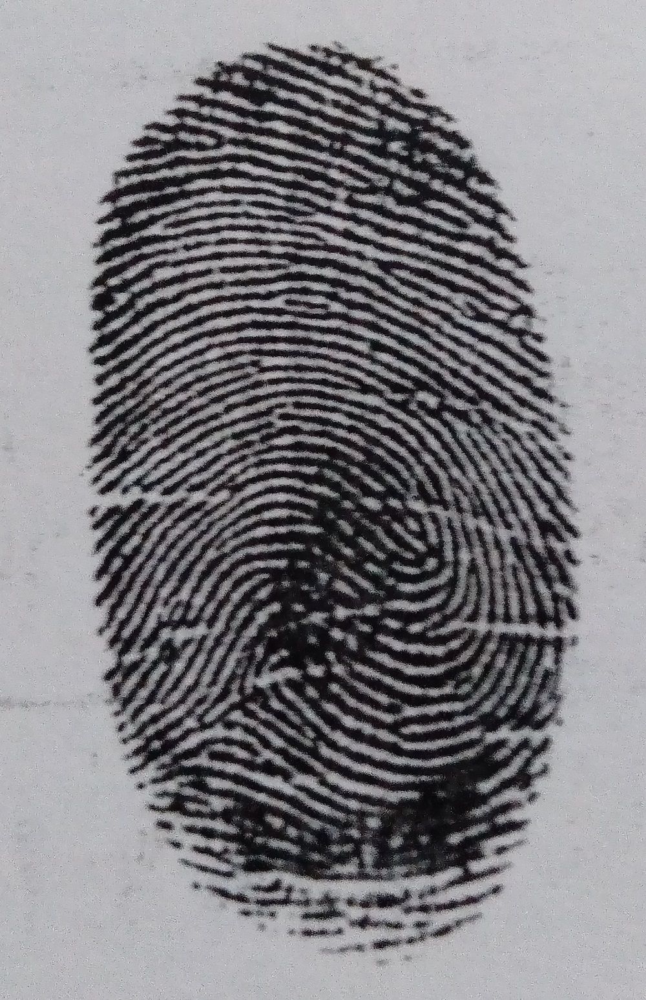
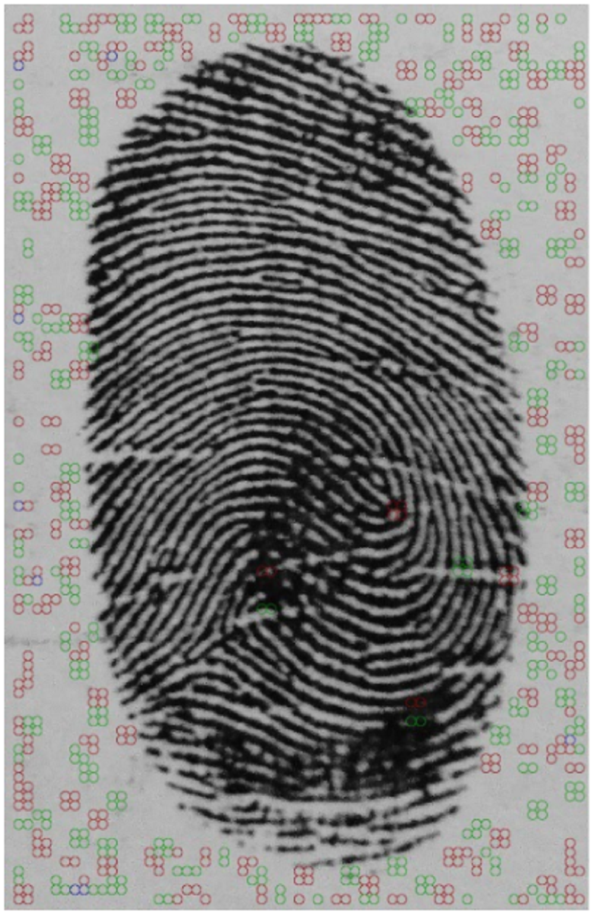
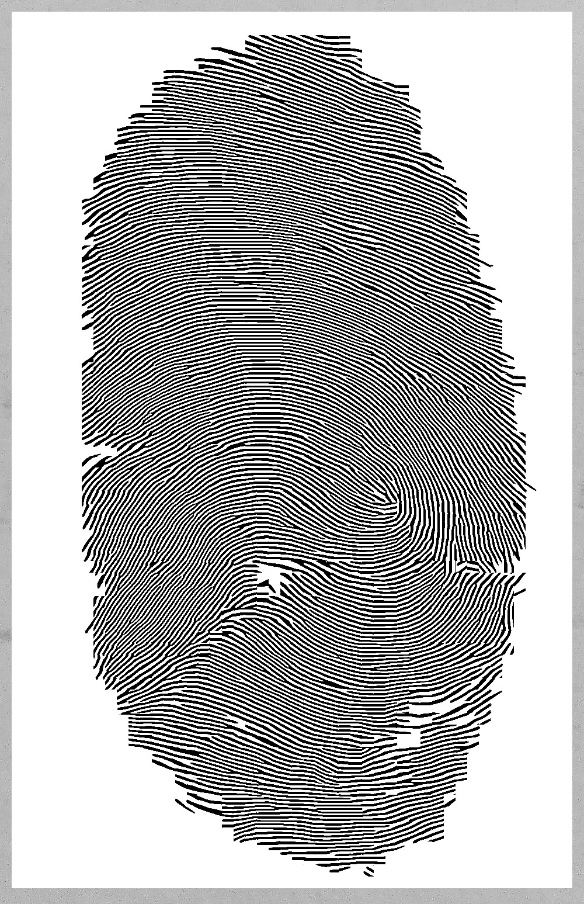
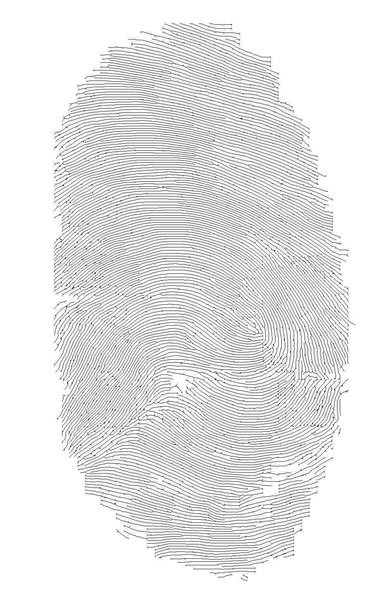

Gambar Original
Gambar menggunakan cap sidik ibu jari tinta biru di fotokopi agar lebih jelas,
setelah itu baru difoto.

Proses POINCARE
Menghasilkan titik-titik / point-point warna merah dan hijau pada titik-titik
tertentu pada sidik jari.

Proses GABOR
Digunakan untuk memperbaiki kualitas citra sidik jari hasil akusisi,
serta untuk mengambil ciri makro dan mikro yang terdapat dalam citra sidik jari,
sehingga diperoleh jumlah ciri yang tetap untuk setiap sidik jari

Proses THINNING
Pada pengenalan sidik jari metode thinning sangat penting karena dapat
mengurangi waktu proses sistem. Hasil dari metode thinning tidak merubah struktur
sidik jari dan mempertahankan lokasi ridge pada sidik jari dan ciri falley atau bukit.

Proses EXTRACT MINUTIAE
Crossing number digunakan untuk mengidentifikasi ujung ridge dan ridge bifurcations.
| ORIGINAL | POINCARE | GABOR | THINNING | EXTRACT MINUTIAE |
|